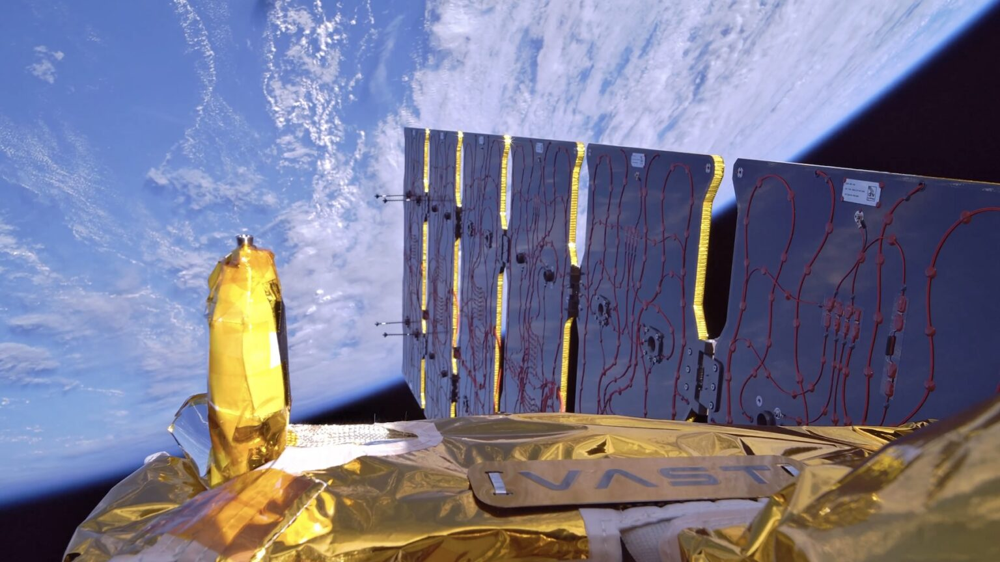
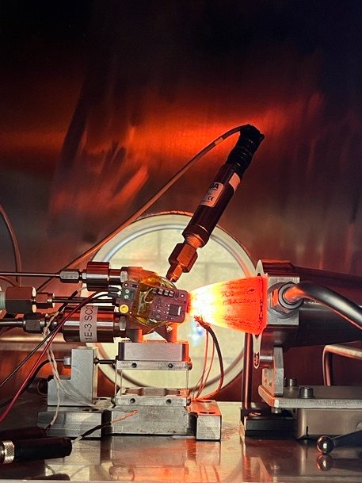

Vast Space: Saiph Thruster Testing
Overview
Haven Demo is Vast Space's first spacecraft that has been successfully launched, deployed, and de-orbited. It serves as a testbed to generate valuable flight heritage for the custom hardware and systems that will be utilized on Haven-1 Vast's first full space station. The spacecraft is a simple satellite that contains miniaturized or partial versions of many of the subsystems that will appear on Haven-1. These systems include the power system, avionics, thermal protection system, GNC architecture, antenna, and most relevant to my work, a miniaturized version of the propulsion system. The spacecraft successfully launched as a part of SpaceX's Bandwagon-4 Falcon 9 launch in November 2025 completing its mission over a span of 3 months, finally successfully de-orbiting in February 2026.
This page documents the work I did as a propulsion test intern at Vast Space during the summer between junior and senior year of my undergraduate degree. During this time I served as a test director/operator during the testing of Impulse space's Saiph thruster across multiple campaigns serving as the basis of Haven Demo's flight rationale. Due to the nature of the NDA I signed while working at Vast I cannot share too many details about the work I did and as such this page serves as more of a brief overview of the work I did and its impact.


Saiph Thruster Testing
The Saiph thruster is a 6 lbf thruster designed by Impulse Space that utilizes autogenously pressurized nitrous oxide and ethane as its oxidizer and fuel in a blowdown configuration. Vast contracted Impulse to supply the propulsion system for the Haven Demo spacecraft and Haven-1 space station including multiple Saiph thrusters and COPV tanks. Given that this system has already undergone extensive testing and has exciting flight heritage on the Mira spacecraft. Despite this Vast still sought to do its own testing to validate the functionality of the Saiph thruster for the operating conditions Vast was planning on using it in.
To this end Vast decided to launch a test campaign to validate Saiph's functionality utilizing a vacuum chamber test stand at their Mojave test site. During my internship I worked on this test stand performing validation testing on the Saiph thruster for the Haven Demo and HAven 1 missions. In this role I served as test director and operator conducting hot-fire testing of Saiph including test stand bring up, test stand control via remote console, managing the flow of test data, performing preliminary test data reviews in WinPlot, and interfacing with responsible engineers. In addition to these typical roles during test operation I also we responsible for reconfiguring the test stand when needed to specific test conditions requested by responsible engineers as well as diagnosing and addressing anomalies as they appeared during testing. This work resulted in the competitions of 24+ hot-fires across 9 distinct campaigns testing everything from cold starts to long duration burns, resulting in the completion of Haven Demo's flight rationale.
In addition to the work I did during test operation I also worked on a few test stand improvement projects. This included developing a COPV fill measuring and heating system that would allow for the integration of flight COPV into the vacuum chamber test stand’s architecture. It also included designing mounting infrastructure for a heat exchanger upgrade to the test stand, allowing for longer duration tests of the thruster.